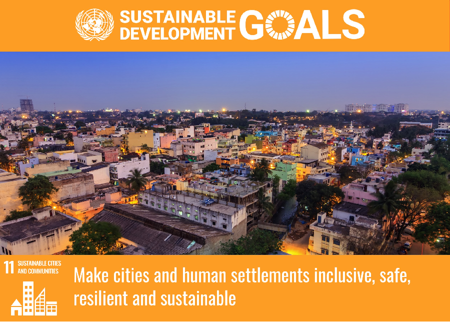

SDG 11 aims to make cities and human settlements inclusive, safe, resilient, and sustainable. With over half of the world's population already living in urban areas, this figure is projected to rise to 70% by 2050, further straining infrastructure and resources. Currently, approximately 1.1 billion people live in slums or slum-like conditions, with an additional 2 billion expected in the next 30 years, mostly in developing countries. Many cities are struggling to keep up with rapid urbanization, leading to issues like inadequate housing, pollution, and limited access to essential services such as public transportation. Individuals also play a crucial role in advocating for responsible urban development, engaging in local governance, and ensuring that their communities are planned with safety, accessibility, and environmental sustainability in mind.